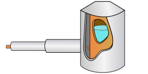

Bio-Inspired Adhesives for Human Skin
Design
Mechanics
MATLAB
Image Processing
Research on the adhesion mechanics of bio-inspired surfaces. Their detachment is captured and observed as it happens, allowing for a deeper insight into what enables higher adhesion.
ParkFast
Machine Learning
Python
Computer Vision

Can we predict where and when a parking spot will free up? This team project couples a classification model with a computer vision model to find empty spots on the streets and in parking lots.
Erasable Printer Ink
Materials Science
Chemistry
Design
Thermochromism is the change of colour in the presence of heat. Most heat-induced colour changing products change back when the heat is removed. In this thesis project, we design, print, and optimize a permanently erasable printer ink.
Reactor Head for Gas Deposition
Design
ANSYS Fluent
3D Printing

A re-imagined 3D-printed reactor head for gas deposition allows for rapid iteration and testing. The design of the gas pathways are modelled with ANSYS Fluent to achieve a uniform deposition.
Work done as part of a research scholarship with Professor Musselman at the University of Waterloo.
Cryo-Holder for TEMs
Design
Heat Flow Simulations
COMSOL

When you cool samples to cryogenic temperatures (<130°C), even black-body radiation can overheat things. The sample holder is designed to maximize cooling while minimizing vibrations.
Work done as part of a research scholarship with Professor Sciaini at the University of Waterloo.
Cancer Dataset and Pathway Visualizations
Data Analysis
Visualizations
JavaScript